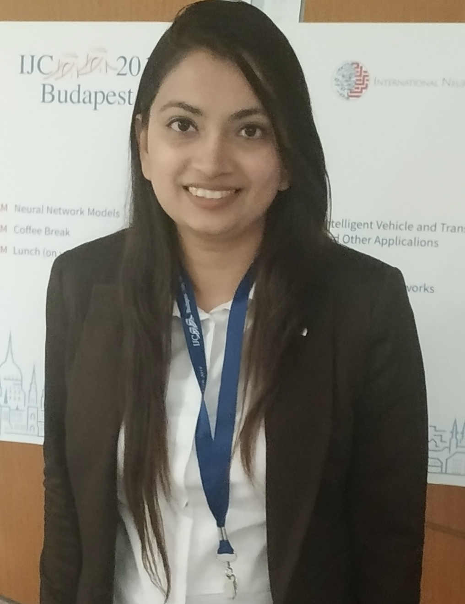
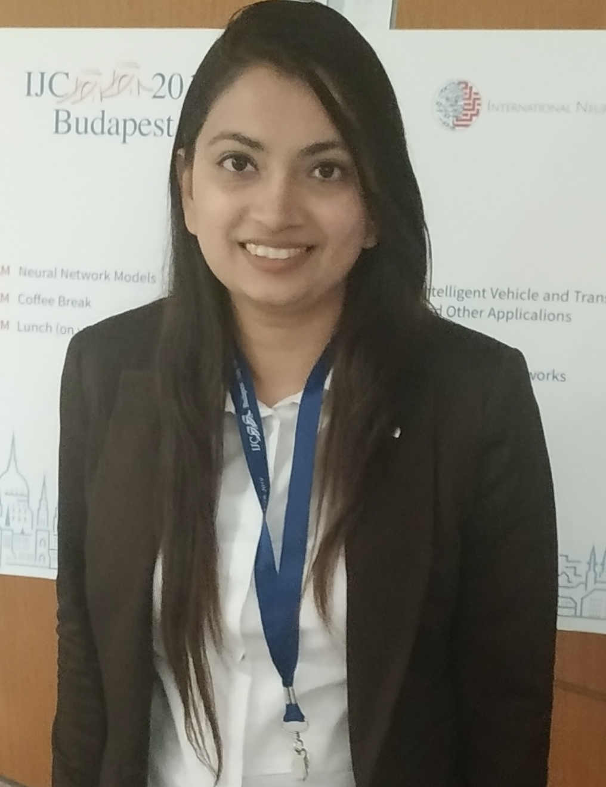

Symposium Description
Artificial intelligence (AI), specifically, Natural Language Processing (NLP) is being hailed as a new breeding ground for immense innovation potential. While scholars believe that NLP has enormous potential for excessive growth, one question remains: how can it be used for the better welfare of the society? Researchers believe that NLP-based technologies could help to solve societal issues such as equality and inclusion, education, health, and hunger, and climate action etc. and many more. Tackling these questions requires a concerted, collaborative effort across all sectors of society. The Symposium on NLP for Social Good is a novel effort that aims to enable NLP researchers and scholars from inter-disciplinary field who want to think about the societal implications of their work for solving humanitarian and environmental challenges. The symposium aims to support fundamental research and engineering efforts and empower the social sector with tools and resources, while collaborating with partners from all sectors to maximise effect in solving problems within public health, nature & society, climate & energy, accessibility, crisis response etc.
In its inception, this year we invite speakers from academia and industry to provide an overview of some areas from NLP applications such as education, healthcare and legal domains and plan to provide a platform to stimulate discussion regarding the current state of NLP in these varied fields. We hope to benefit as many researchers as possible from NLP and interdisciplinary areas who want to come together and work towards improving the society and its issues through technology.
Speakers
- Iryna Gurevych (Keynote Talk)
Bio: Iryna Gurevych (PhD 2003, U. Duisburg-Essen, Germany) is professor of Computer Science and director of the Ubiquitous Knowledge Processing (UKP) Lab at the Technical University (TU) of Darmstadt in Germany. Her main research interests are in machine learning for large-scale language understanding and text semantics. Iryna’s work has received numerous awards. Examples are the ACL fellow award 2020 and the first-ever Hessian LOEWE Distinguished Chair award (2,5 mil. Euro) in 2021. Iryna is co-director of the NLP program within ELLIS, a network of excellence in machine learning. She is currently the president of the Association for Computational Linguistics. In 2022, she has been awarded an ERC Advanced Grant.
Title: NLP meets Psychotherapy: from Estimating Depression Severity to Estimating the Client’s Well-BeingAbstract: Language plays a crucial role in psychotherapy and the related processes. Linguistic expression not only reveals emotional states, but also provides insight into the immediate cognitions of the client. In this talk, I will present two projects related to the use of NLP for estimating the client’s depression severity and well-being. In the first project, we examine emotional coherence between the subjective experience of emotions and emotion expression in therapy and whether this coherence is associated with clients' well-being. We present an end-to-end approach where we use emotion predictions from our transformer-based emotion recognition model to study emotional coherence and its diagnostic potential in psychotherapy research. In the second project, we propose an efficient semantic pipeline to study depression severity in individuals based on their social media posts. We represent each individual by a set of selected sentences and use them as evidence for predicting the individual’s symptom severity. For that, we explore different aggregation methods to answer one of four Beck Depression Inventory (BDI) options per symptom. We conclude by a short overview of our further ongoing and planned projects in NLP for Mental Health.
- Amit Sheth (Keynote Talk)
Bio: Prof. Amit Sheth (Home Page , LinkedIn ) is an Educator, Researcher, and Entrepreneur. He is the founding director of the university-wide AI Institute at the University of South Carolina. He is a Fellow of IEEE, AAAI, AAAS, ACM and AAIA. His awards include IEEE CS W. Wallace McDowell and IEEE TVSVC Research Innovation awards. He has (co-)founded four companies, including the first Semantic Search company in 1999 that pioneered technology similar to what is found today in Google Semantic Search and Knowledge Graph, ezDI which developed knowledge-infused clinical NLP/NLU, and Cognovi Labs at the intersection of emotion and AI. He is particularly proud of the success of his >45 Ph.D. advisees and postdocs in academia, industry research, and entrepreneurship.
Title: Language Understanding using Neuro-symbolic AI: Why we need varied, comprehensive, and stratified knowledgeAbstract: "Data alone is not enough." This was the section heading in Pedro Domingos’ 2012 seminal paper. I have been a believer in this for a long time. In our Semantic Search engine, commercialized in 2000, we complemented machine learning classifiers with a comprehensive WorldModel™ or knowledge bases (now referred to as knowledge graphs) for improved named entity and relationship extraction and semantic search. It was an early demonstration of the complementary nature of data-driven statistical learning (since replaced by neural networks) and knowledge-supported symbolic AI methods. In this talk, I want to observe three important issues about the Why, What, and How of using knowledge in neuro-symbolic AI systems to advance from NLP to NLU. While the transformer-based models have achieved tremendous success in many NLP tasks, the pure data-driven approach comes up short when we need NLU, where knowledge is key to understanding the language, as required for the explanation, safety, and ensuring adherence to decision-making processes that must be followed (e.g., in clinical diagnosis). Throughout the talk, I will use examples from the social good domains, specifically mental health and addiction, to demonstrate the need for "understanding" (for example, for safety with explanations) and why/how knowledge-infused learning offers better outcomes compared to data-driven only alternatives. Further details: Advancing Neuro-symbolic AI with Deep Knowledge-infused Learning
- Saptarshi Ghosh
Bio: Saptarshi Ghosh (http://cse.iitkgp.ac.in/~saptarshi/) is an Associate Professor at the Department of Computer Science and Engineering, Indian Institute of Technology, Kharagpur. He obtained his Ph.D. in Computer Science from the same institute, and was a Humboldt Postdoctoral Fellow at Max Planck Institute for Software Systems (MPI-SWS), Germany. His research interests include Law and AI, Social media analytics, and Algorithmic bias and fairness (on which he presently leads a Max Planck Partner Group at IIT Kharagpur). He has published more than 80 papers in peer-reviewed conferences and journals. He investigates several research projects funded by the Government as well as by the industry. He was awarded the Institution of Engineers (India) Young Engineer Award 2017-18 in the Computer Engineering discipline. His works have been awarded at top Law-AI conferences, including the Best Paper Award at JURIX 2019 and the Best Student Paper Award at ICAIL 2021. He is presently the Section Editor on Legal Information Retrieval for the Artificial Intelligence and Law journal, the most prestigious journal in Law-AI.
Title: NLP for the Legal Domain: Challenges and OpportunitiesAbstract: Legal NLP - the application of NLP over various types of legal text - has become an important application domain for NLP, primarily because of the recent proliferation of publicly available legal data, and the socio-economic benefits of mining legal insights. There are several associated challenges, ranging from the need to deal with complex legal language, to the extreme length of legal documents, to the need for explainability in this domain. This talk will discuss some of the challenges and opportunities in applying NLP in the legal domain. The talk will also discuss some of the popular research problems being studied by the Legal NLP community, including summarization of long legal documents, complex classification tasks over legal documents, and pretrained language models for the legal domain.
- Zaiqiao Meng
Bio: Zaiqiao Meng is currently a Lecturer in the IDA section of the University of Glasgow. Previously, he worked as a Postdoctoral Researcher at the Language Technology Laboratory of the University of Cambridge and the Terrier team of the University of Glasgow. Zaiqiao obtained his Ph.D. in Computer Science from Sun Yat-sen University in December 2018. He currently leads a small research team consisting of PhDs, masters, and undergraduate students working on Natural Language Processing, Knowledge Extraction, Representation & Reasoning Learning, particularly some biomedical applications.
Title: Probing and Infusing Biomedical Knowledge for Pre-trained Language ModelsAbstract: Pre-trained language models (PLMs) have made significant advancements in few- or zero-shot language understanding tasks by pre-training model parameters in a task-agnostic way and transferring knowledge to specific downstream tasks via fine-tuning. The integration of factual knowledge from knowledge graphs (KGs) is crucial for knowledge-intensive tasks such as question-answering and fact-checking. In the biomedical domain, where public training data is limited and noisy, trusted biomedical KGs are essential for accurate inferences. Therefore, measuring the amount of world knowledge stored in PLMs (knowledge probing) and integrating factual knowledge into these models (knowledge infusion) are challenging tasks in the NLP field. In this talk, we will introduce a new biomedical knowledge probing benchmark, MedLAMA, and a novel probing approach called Contrastive Probe, for probing biomedical knowledge of PLMs. We will also present our proposed knowledge infusion approach, Mixture-of-Partitions (MoP), which infuses factual knowledge based on partitioned KGs into PLMs and automatically routes useful knowledge from these adapters to downstream tasks. Finally, we will review ChatGPT's impact on the healthcare domain.
- Mrinmaya Sachan
Bio: Mrinmaya Sachan is an Assistant Professor of Computer Science at ETH Zurich. His research is in the area of Natural language processing and the interface of Machine learning and Education. Prior to this position, Mrinmaya was a Research Assistant Professor at TTI Chicago. Before that, he received a Ph.D. from the Machine Learning Department at CMU and a B.Tech. in Computer Science from IIT Kanpur where he received an Academic Excellence Award. He has received several awards for his work, including an outstanding paper award at ACL 2015, an IBM PhD fellowship, the Siebel scholarship and the CMU CMLH fellowship. His current research is funded by grants from the Swiss National Science Foundation, the ETH Zurich foundation and Haslerstiftung.
Abstract: In this talk, I will describe some of my group's effort in NLP for social good, particularly, in the field of education. I will present some of our recent work on leveraging large language models (LLMs) to support education in various ways, such as creating practice problems and scaffolds, providing meaningful feedback to students, having a Socratic dialog with students, etc. - while - customizing the learning experiences of students according to their own individual needs. Finally, I will share some challenges as well as opportunities in this emerging field.
- Inna Wanyin Lin
Bio: Inna Wanyin Lin is a PhD student in the Paul G. Allen School of Computer Science & Engineering at the University of Washington, working with Prof. Tim Althoff. Her research focuses on natural language processing and human-AI collaboration for health and social applications. Inna holds an M.Eng. in Computer Science from Cornell Tech and a B.A. in Mathematics from Columbia University. Prior to her PhD, Inna worked at J.P. Morgan as a quantitative analyst. She has received Marilyn Fries Endowed Regental Fellowship and the WWW 2021 Best Paper Award. Inna’s research has been covered internationally by news outlets including The Wall Street Journal, The Washington Post, NPR, Deutschlandfunk, and infobae.
Title: Human-Centered NLP for Mental HealthAbstract: The increasing prevalence of mental health issues worldwide has amplified the need for innovative and effective solutions to address the growing demand for mental healthcare. Recent NLP advancements have offered the promising potential to tackle this issue. In this talk, I will delve into the opportunities and risks in developing NLP applications for mental health by discussing two recent projects. I will first talk about HAILEY, an AI-in-the-loop agent that provides just-in-time feedback to help online peer supporters respond more emphatically to those seeking help. Through a randomized controlled trial with real-world peer supporters on Talklife, a large online peer-to-peer support platform, we demonstrate that our Human-AI collaboration approach significantly increases conversational empathy. Despite promising opportunities, the use of language technologies also presents risks. In this regard, I will discuss our recent project examining gendered mental health stigma in masked language models, which are frequently used in downstream applications related to mental health. We find that masked language models capture societal stigma about gender in mental health, and different models capture dimensions of stigma differently for men and women. Overall, I hope to shed light on the opportunities and challenges in building effective and ethical NLP applications for mental healthcare.
Organizers
 
 
- Procheta Sen Tulika Saha Danushka Bollegala
University of Liverpool, United Kingdom